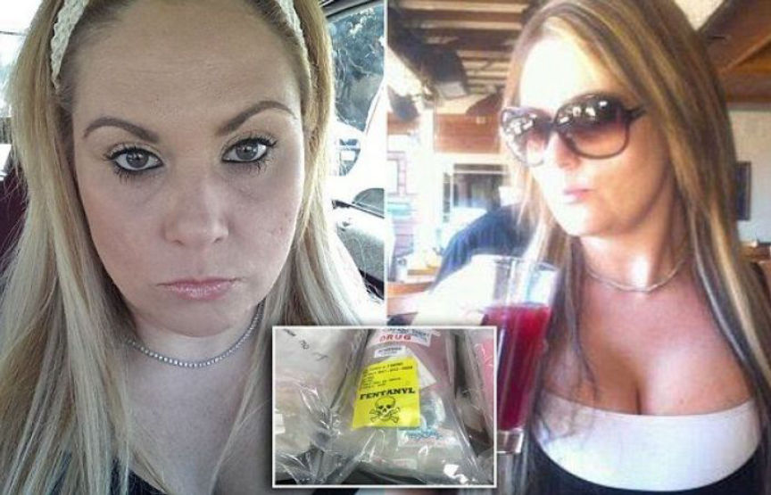
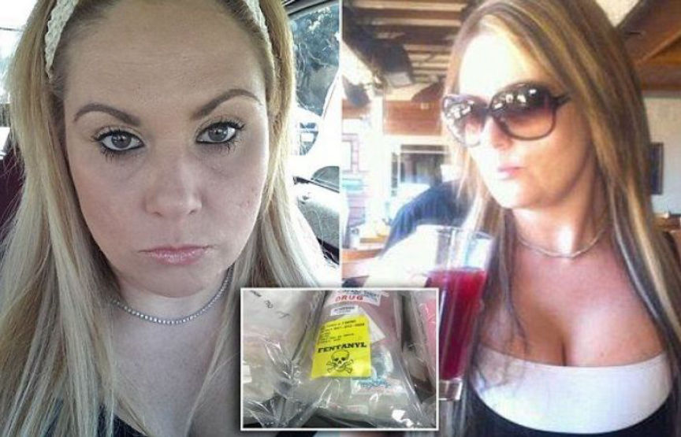

San Diego Man Sold Fentanyl on Dream Market
~2 min read | Published on 2019-07-17, tagged Darkweb-Vendor, Drugs, Pleaded-Guilty using 344 words.
One of the two co-conspirators accused of operating the darkweb market vendor account “TheDrugLlama” admitted distributing fentanyl, selling midbranded drugs, and other charges related to the drug distribution conspiracy. His co-defendant pleaded not guilty and will face a jury trial in August.
Branԁon Arias, 34, admitted the following charges:[list]*conspiracy to distribute fentanyl;*five counts of illegally distributing fentanyl;*selling counterfeit drugs;*and misbranding drugs.[/list]
At the U.S. District Court in East St. Louis, Arias admitted conspiring with his co-defendant, Melissa Scanlan, to distribute more than 1,000 fake oxycodone pills containing fentanyl or another fentanyl analogue to customers using darkweb marketplaces. He said that he had created and helped operate the Dream Market vendor account “TheDrugLlama.” Arias also admitted the distribution of misbranded drugs such as Cytotec (misoprostol), a drug used to prevent stomach ulcers and induce labor. The drug is also known and used as an alternative to surgical abortions. In some parts of the United States, the demand for a cheap and discrete abortion is increasing, creating a black market for Cytotec.

[em]Co-defendant Melissa Scanlan[/em]
Press Release: Dream Vendor “TheDrugLlama” Caught in California
As mentioned in the Adderallz case, counterfeit drug charges and misbranded drug charges often involve the Food and Drug Administration Office of Criminal Investigations (FDA-OCI). The FDA–although primarily responsible for “protecting and promoting public health through the control and supervision” of food, drugs, and other products–has recently been investigating darκweb vendors responsible for distributing counterfeit drugs.
Mallinckrodt Pharmaceuticals disliked that a darkweb vendor was distributing counterfeit versions of their 30mg oxycodone pills. The Food and Drug Administration disliked that a darκweb vendor was selling misoprostol intended for use outside of the approved uses for misoprostol.
He is scheduled to be sentenced in October.
U.S. Attorney Steve Weinhoeft:
People think they are anonymous when they use the darκweb but the drugs and money are here, in the real world, and our agents will work tirelessly to connect the illegal contraband to the criminals hiding within the shroud of the dark web.
Arias’ co-defendant, Melissa Scanlan, pleaded not guilty at an earlier hearing and has a jury trial scheduled for 27 August, 2019.
Branԁon Arias, 34, admitted the following charges:[list]*conspiracy to distribute fentanyl;*five counts of illegally distributing fentanyl;*selling counterfeit drugs;*and misbranding drugs.[/list]
At the U.S. District Court in East St. Louis, Arias admitted conspiring with his co-defendant, Melissa Scanlan, to distribute more than 1,000 fake oxycodone pills containing fentanyl or another fentanyl analogue to customers using darkweb marketplaces. He said that he had created and helped operate the Dream Market vendor account “TheDrugLlama.” Arias also admitted the distribution of misbranded drugs such as Cytotec (misoprostol), a drug used to prevent stomach ulcers and induce labor. The drug is also known and used as an alternative to surgical abortions. In some parts of the United States, the demand for a cheap and discrete abortion is increasing, creating a black market for Cytotec.

Co-defendant Melissa Scanlan
[em]Co-defendant Melissa Scanlan[/em]
Press Release: Dream Vendor “TheDrugLlama” Caught in California
As mentioned in the Adderallz case, counterfeit drug charges and misbranded drug charges often involve the Food and Drug Administration Office of Criminal Investigations (FDA-OCI). The FDA–although primarily responsible for “protecting and promoting public health through the control and supervision” of food, drugs, and other products–has recently been investigating darκweb vendors responsible for distributing counterfeit drugs.
Mallinckrodt Pharmaceuticals disliked that a darkweb vendor was distributing counterfeit versions of their 30mg oxycodone pills. The Food and Drug Administration disliked that a darκweb vendor was selling misoprostol intended for use outside of the approved uses for misoprostol.
He is scheduled to be sentenced in October.
U.S. Attorney Steve Weinhoeft:
People think they are anonymous when they use the darκweb but the drugs and money are here, in the real world, and our agents will work tirelessly to connect the illegal contraband to the criminals hiding within the shroud of the dark web.
Arias’ co-defendant, Melissa Scanlan, pleaded not guilty at an earlier hearing and has a jury trial scheduled for 27 August, 2019.